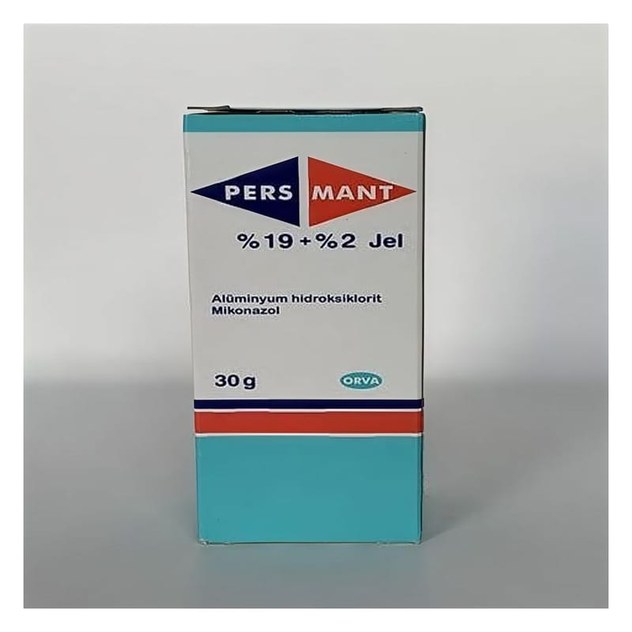

Pers-Mant %19 + %2 Jel (30 g)

Ne için kullanılır
KT · Bölüm 1PERS-MANT, haricen kullanıma yönelik antifungal (mantar hastalıklarına karşı etkili) ilaçlar grubuna dahil bir jeldir. Etkin madde olarak, 1 gramında 20 mg mikonazol ve 190 mg alüminyum hidroksiklorit içermektedir. Mikonazol, bakteri ve mantarlara karşı etkili olan bir maddedir. Bu ilacı kullanmaya başlamadan önce bu KULLANMA TALİMATINI dikkatlice okuyunuz, çünkü sizin için önemli bilgiler içermektedir.
Bu kullanma talimatını saklayınız. Daha sonra tekrar okumaya gereksinim duyabilirsiniz. Eğer ilave sorularınız olursa, lütfen doktorunuza veya eczacınıza danışınız. Bu ilaç kişisel olarak sizin için reçete edilmiştir, başkalarına vermeyiniz. Bu ilacın kullanımı sırasında, doktora veya hastaneye gittiğinizde doktorunuza bu ilacı kullandığınızı söyleyiniz. Bu talimatta yazanlara aynen uyunuz. İlaç hakkında size önerilen dozun dışında yüksek veya düşük doz kullanmayınız.
Alüminyum hidroksiklorit, terlemeyi önleyici, bakterilere ve mantarlara karşı etkili bir bileşiktir. PERS-MANT, özgün kokulu, renksiz, bağdaşık (homojen) özelliklerde olup, 30g jel içeren plastik şişelerde bulunmaktadır. PERS-MANT, nemli, sıcak ve hijyenik açıdan zayıf bölgelerde üreyen farklı mantarların neden olduğu saç kıran (Tinea capitis), ayak mantarları (Tinea pedis), gövde, kol, bacak ve kasıklarda görülen mantarların (Tinea corporis) tedavisinde kullanılır. PERS-MANT ayrıca, daha çok gövde, yüz, saçlı deri ve kıvrımlı bölgelerde görülen maya mantarlarının sebep olduğu mantar hastalıklarının (Pitriyazis versicolor, seboreik dermatit) tedavisinde de kullanılır. Her türlü aşırı terleme (hiperhidrozis), özellikle koltuk altı, ayak ve ellerde görülen aşırı terleme nedeniyle oluşan ve uygun ortamda kısmen mikroorganizmaların faaliyeti sonucu ortaya çıkan koku yayılmasına karşı kullanılır. Deri kıvrımlarında sık görülen ve aşırı terlemeler sonucu ortaya çıkan ikincil enfeksiyonlarda (iltihap oluşturan mikrobik hastalık), vücudun kıvrımlı yerlerinde oluşan yüzeysel iltihaplarda (intertrigo) ve yürüyüş esnasında oluşabilecek ayaktaki sıvı dolu kabarcıkların önlenmesinde PERS-MANT etkin kullanılabilir.